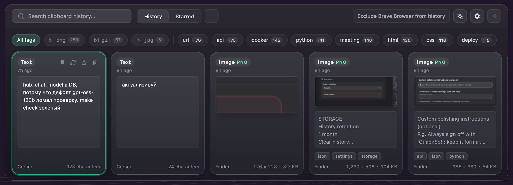
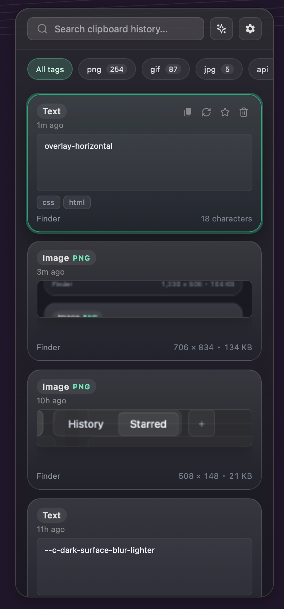
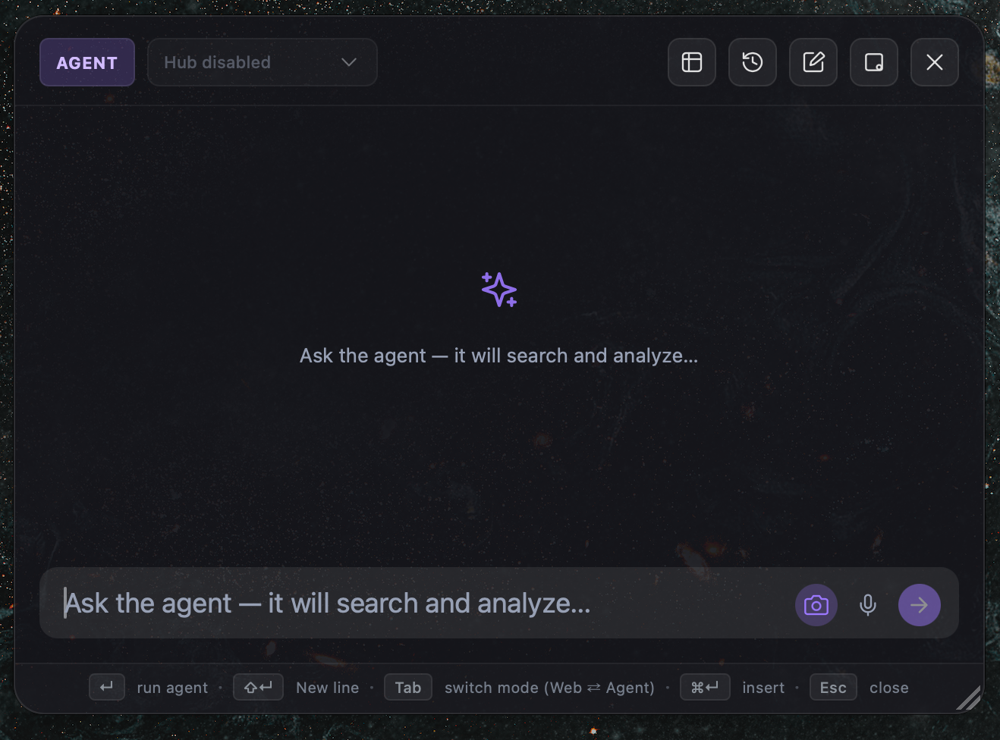
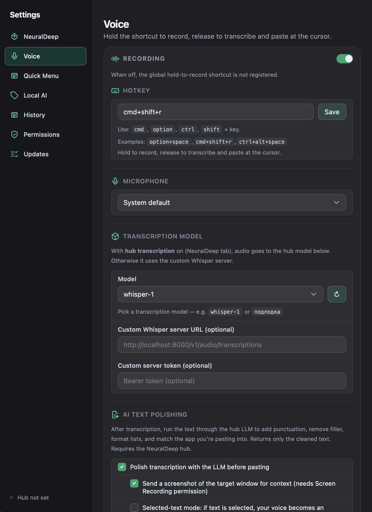
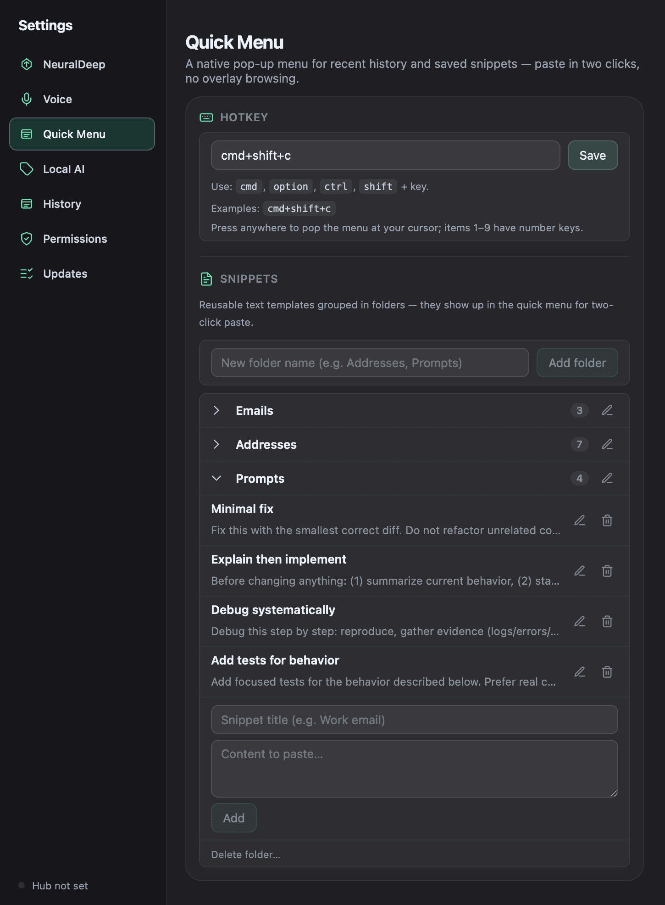

macOS clipboard · on-device intelligence
Everything you copy, one keystroke away.
Copyosity keeps a searchable history of everything you copy, reads text out of copied images on-device, turns your voice into ready-to-paste text, and exposes a command palette — all from a floating panel you summon with a hotkey. It lives in the menu bar and stays out of your way until you need it.

Keyboard-first, by design
A clipboard that actually reads what you copy
Four things you reach for every day — history, a command palette, your voice, and two-click snippets — each one native, fast, and a keystroke away.
Search everything, including text inside images
Every copy is captured to a local SQLite database with pinning, custom collections, and full-text search. Copied screenshots run through Apple's Vision framework on-device, so the words inside them become searchable too.
- History / Starred tabs and colored collection pills
- Tag bar with PNG / GIF / JPG format chips and AI tags
- Infinite scroll with contextual empty states

Web search and a research agent, in place
Summon a draggable, resizable palette with Agent and Web modes, session history, streaming progress, and markdown answers. Insert, copy, or close — then get back to what you were doing. Powered by NeuralDeep Hub when enabled.
- Streaming agent progress with minimize-to-dot
- Voice input and Insert / Copy / Close actions
- Create Notes & Reminders, read Calendar via Apple Events

Hold a key, speak, paste clean text
Hold a global hotkey to record from any microphone. The transcription is cleaned into natural, typed-style text — punctuation, filler removed, lists formatted — and adapted to the app you're pasting into. Off by default until you switch it on.
- Context-aware polishing tuned to the target app
- Delivered to the clipboard with retries so it always lands
- A live spinner shows transcription in progress

Two clicks to paste, no overlay
A native Clipy-style pop-up appears at your cursor on ⌘⇧C: recent history under number keys 1–9, up to 100 entries in submenus, and your saved snippets grouped by folder. Pick one and it pastes into whatever app was frontmost.
- Reusable templates — email, address, prompts — in folders
- Configurable global hotkey; inline folder rename
- Edit snippets right from Settings → Quick Menu

And the details that keep it out of your way
On-device OCR
Text inside screenshots and photos is extracted with Apple's Vision framework. No image ever leaves your Mac for OCR.
Image clipboard
PNG, JPG, and animated GIF from the pasteboard or Finder, with format badges, dimensions, and file size on every card.
Automatic tagging
Entries get short, practical labels via NeuralDeep Hub or local Ollama — with a manual Retag whenever you want.
Local AI option
Optional Ollama integration for fully local tagging, with in-app onboarding: install, start server, download model, test.
Privacy built in
Concealed clipboard content is ignored, app exclusions hide sensitive sources, and Copyosity's own copy/paste never pollutes history.
Native menu-bar UI
A transparent, non-activating NSPanel that appears over your current app without stealing focus, plus a tray icon and global shortcuts.
OCR runs through Apple Vision locally. Tagging and voice can stay fully local via Ollama — nothing leaves your Mac unless you turn a hub feature on.
Every build is signed with a Developer ID certificate and notarized + stapled by Apple, so Gatekeeper opens it cleanly — even offline.
Copyosity checks GitHub Releases on launch, downloads signed updates in the background, and notifies you when a new version is ready.
Tauri 2, Svelte 5, Rust, and SQLite. Small, fast, and quiet — it runs in the menu bar and waits for its hotkey.
Get Copyosity
Pick the DMG for your Mac's architecture from the latest release, drag Copyosity into Applications, and press ⌘⇧V.
macOS 12+ · Copyosity_*_aarch64.dmg (M-series) · Copyosity_*_x86_64.dmg (Intel)